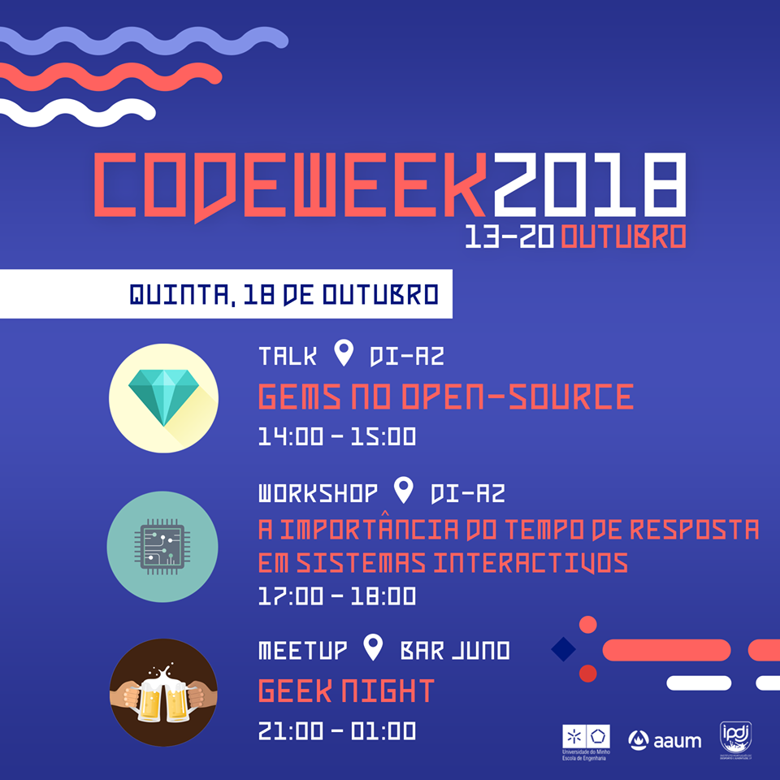
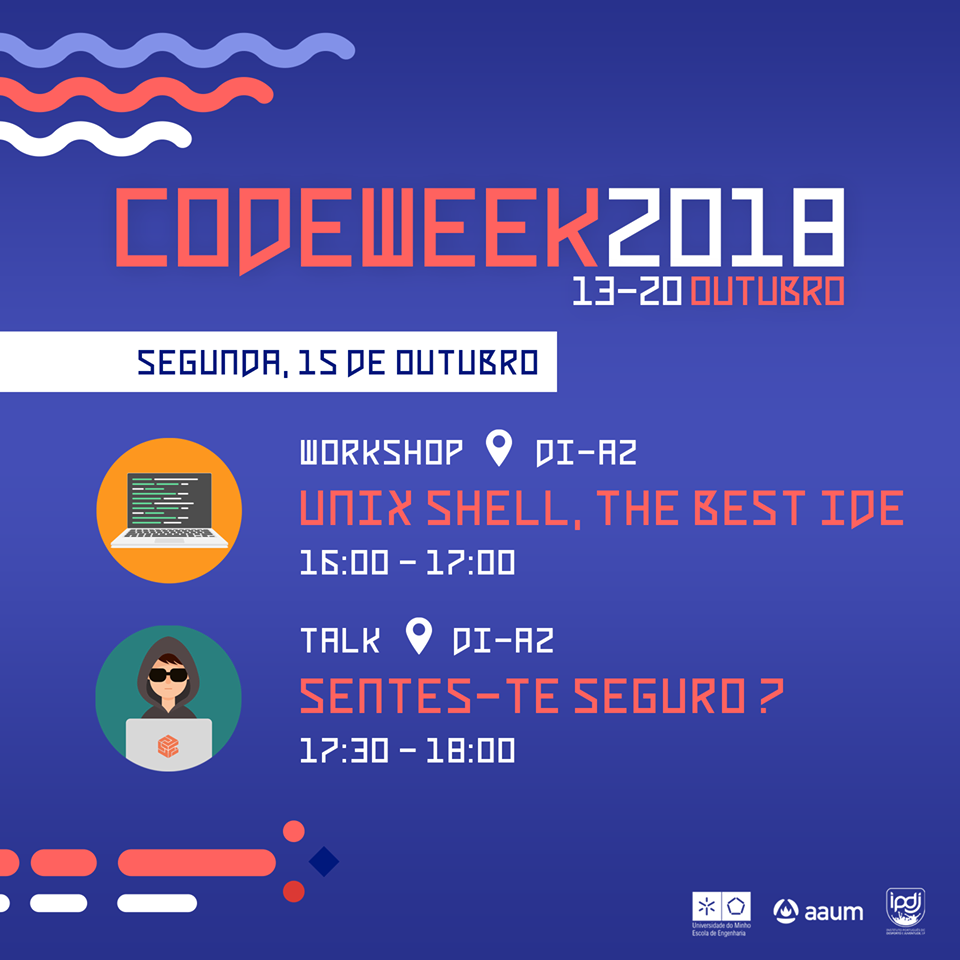
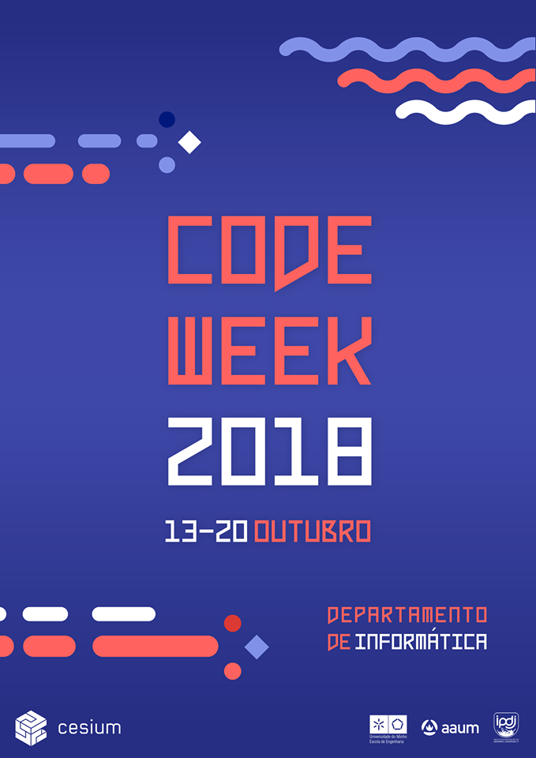

Nesta quinta-feira, dia 18 de Outubro de 2018 realizou-se mais uma paletra presidida pelo CAOS nesta CodeWeek que está perto de acabar. Com Daniel Tinoco e José Pedro Resende como oradores, apresentaram uma nova linguagem - elixir - a alunos de primeiro e segundo ano, bem como o projeto para a próxima SEI.

Nesta segunda-feira, dia 15 de Outubro de 2018 realizou-se a primeira palestra presidida pelo CAOS na CodeWeek deste ano. Com os habituais oradores, Daniel Tinoco e José Pedro Resende, mostraram aos alunos interessados como formularam o CTF do último desafio de informática realizado por eles.

Hoje, sábado, iniciou-se a CodeWeek, um evento que é realizado todos os anos pelo CeSIUM onde o departamento do CAOS participa ativamente com algumas paletras durante a semana sobre variados assuntos como a cyber segurança e o open source.
